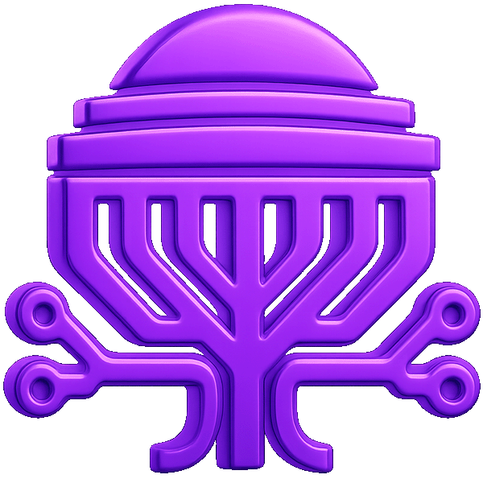

OpenClaw Workshop Pt 2
Building Products Live with Agent Teams
MIT GenAI Global · Sunday, April 19, 2026
The Personal AI Trajectory
💬
Yesterday
Chat in a browser tab.
You go to it.
Stateless. Forgets everything.
📱
Now
Always-on in your pocket.
Persistent memory.
Knows your context across channels.
🧠
Next
Anticipates before you ask.
Manages routines autonomously.
Acts on your behalf.
Proactive, not reactive.
🌐
Endgame
Manages your entire digital life.
Star Trek: amplifies you.
Wall-E: replaces you.
Same technology. Different design choices.
Now that AI can think — do we let it do all our thinking, or use it like they do at Starfleet Academy to amplify our learning and impact?
The AI is the engineer,
not the engine.
Build deterministic systems with nondeterministic tools.
How It Works
Layer 1 — Personal AI Layer
OpenClaw messaging, memory, tools, channels
↓
Layer 2 — Coding Orchestration
Claude Code parallel sub-agents, file I/O, verification
↓
Layer 3 — Complex Orchestration
n8n / Custom Engines DAGs, governance, retry logic
Spec-Driven Development
The Promise
- Write the perfect spec upfront
- Agents execute flawlessly
- Reproducible — same prompt, same result
- Scalable — run it 1,000 times
The Reality
- You can't spec what you haven't built
- Building reveals what the spec missed
- Human taste can't be encoded in text
- The spec is already outdated by the time you finish writing it
This is waterfall. The spec takes longer than the build.
If you wouldn't let an unsupervised intern do it,
don't let an unsupervised agent do it.
Scope their work. Review their output. Limit their blast radius.
The "Yes Man" Problem
- "Sure, I can schedule that for 9 AM!" — it didn't
- "I'll coordinate all 8 agents in parallel!" — 3 of them silently failed
- "I'll monitor that and alert you!" — it forgot 10 minutes later
- "I've verified the output is correct!" — it checked its own work
Separate verifier. Checkpoints. Humans in the loop for anything that matters.
The Opinionated Framework Problem
- Search: Brave forced as default — we built a workaround
- Coding agents: Codex preferred — even with Claude Code configured
- Image generation: OpenAI assumed — no native alternative
- Model ecosystem: Pulls toward specific providers — friction with Azure/Google/local
Opinionated = fast start, hard to customize. Unopinionated = slow start, full flexibility. Pick one.
Security & Trust
- Your agent can read your messages, files, and calendar. How much of that does it actually need?
- API keys pass through every integration. Each one is an attack surface.
- Agents send emails, post to channels, create infrastructure. You need approval gates on external actions.
- Private context from one session can surface in a group chat. We've seen it happen.
More autonomy = more risk. Design for the worst case.
Real Numbers
A team meeting to discuss building these would take longer than actually building them.
- Each product: built, integrated, and QA-verified by independent agent
- All three ran in parallel. Total wall time: about 14 minutes.
- Verifier agents caught and fixed real bugs before delivery
Start Small, Scale Smart
Week 1
Crawl
Single agent, one repetitive task
Report generation, data formatting
→
Month 1
Walk
Agent + verifier, human review
Internal tools, dashboards
→
Quarter 1
Run
Agent teams, parallel builds
Multi-surface integration
Pick the most repetitive workflow first — not the hardest one.